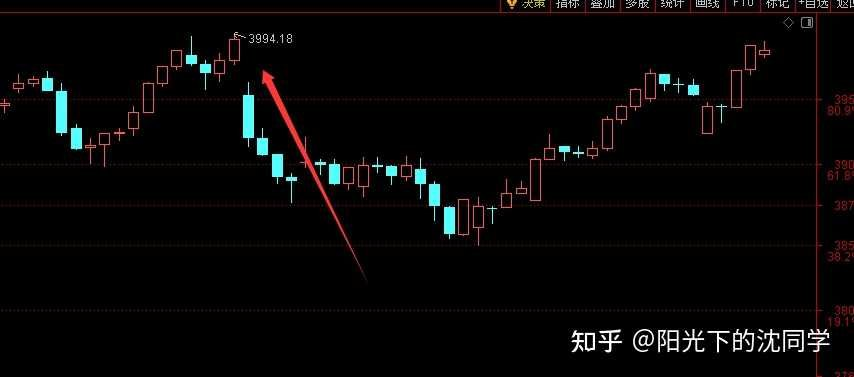
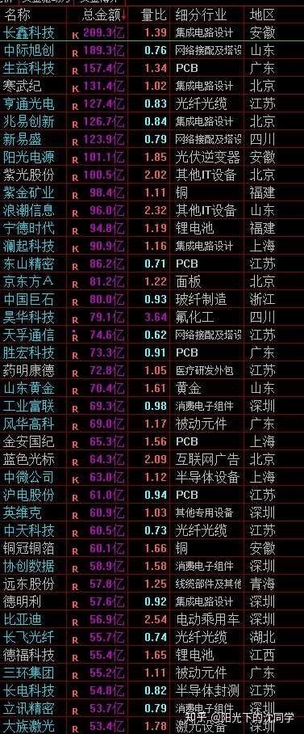
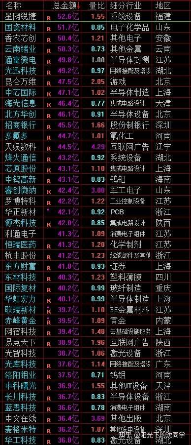
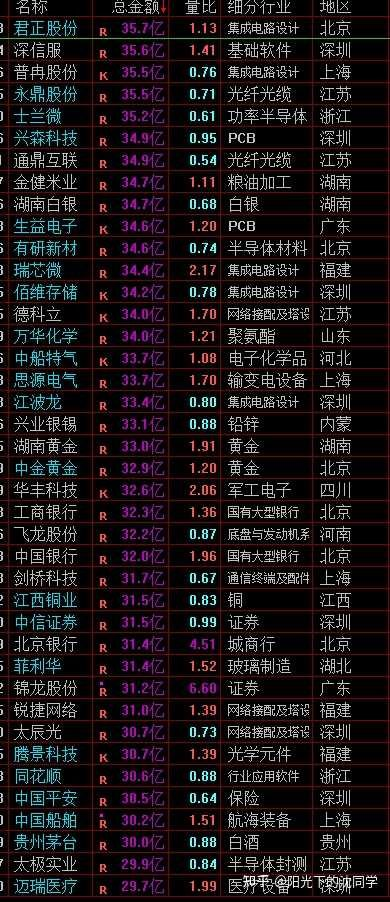

当前市场处于典型的存量博弈阶段，核心逻辑在于‘指数与个股的背离’。作者指出，大盘蓝筹股的支撑掩盖了大部分个股的疲软，由于缺乏持续的增量资金（成交量无法突破2.5万亿），市场无法形成普涨行情。这种环境下，指数的上涨往往是权重股拉动的结果，而非市场整体回暖，因此盲目追涨极易导致‘赚了指数不赚钱’。作者建议通过降低仓位、持有低波动资产（债券、红利）来应对，本质是利用‘现金流流向’判断胜率，在胜率低迷期选择主动防御。
最近大盘蓝筹股表现不错，对指数有一些支撑，但大部分个股跟不上指数表现，基本上之前跌下来的都没有回去
整体行情还是很难做的，尤其是每次指数回到3950以上成交量不能稳步突破2.5万亿，增量资金起不来，存量市场注【本质逻辑】市场没有新资金入场，资金在不同板块间轮动。这意味着上涨必然伴随着其他板块的下跌，是零和博弈。【新手提示】别指望大盘普涨，这种行情下，一旦热点切换，追高极易被套。没办法带动大部分股票上涨，赚钱效应很差
那么市场目前的综合成本区间还是在3950-3650区间，这种行情真的容易多做多错，还是要尽可能把仓位降下来，尤其是短线博弈仓位
我自己是已经清仓了短期账户，还是保守一点，等以后指数下来再做，现在胜率不太高
资金面依旧是最重要的判断胜率依据，就像我们思考经济，不管是宏观，微观，其实都是去挖掘现金流的流向是最靠谱的，基本面分析也一样，看企业到底好不好，未来能不能越来越好，也是要抓住现金流数据去看，这些以后会单独开篇去深度聊，平时复盘暂时没有那么多时间细聊这些
包括投资者心态，情绪方面的把控和调整，其实我最近也一直在写一个心得，内容比较多，做了很多多年的总结和我自己的一些方法，等我写完以后也会单独发出来
我们回到当前行情对资金面的讨论上面来
现在就是资金面整体不佳，没办法做到指数上涨的同时成交量也稳步上涨
因为指数的变化有权重股影响，大盘股如果表现比较好，就算大部分股票下跌，成交量一般般也会导致指数强一点
指数本身主要看的是一个趋势，和个股的分化肯定是有的，尤其是在这种时候，分化更大
所以从纯粹的教科书级别的分析来看，现在这种比较低迷，赚钱效应不太好的行情里面
这一次反弹是不容易突破3994的，这个是之前的高点
因为这一轮反弹起来真的很弱，方方面面都弱
但如果考虑到大盘权重股如果表现超预期一点，指数或许会好一点，但这并不是说交易胜率提升了，而是指数编制的问题
实际上行情没有什么新的变化，资金面依旧很差，那么在这样的情况下，指数还在3950以上拉升，我自己肯定考虑到风险控制问题，短线博弈持仓先清仓出来再说，确实不太好做，我没有什么信心在这样的行情下赚钱
投资没有100%胜率，主要看你自己的盈利模式能不能有信心做好当前市场的行情
你在综合判断了方方面面的情况以后，你认为哪些东西你可以去持有，哪些不能，这些不能人云亦云，你要有自己充分判断，才能坚定执行
不然你可能就一下子空仓，一下子又马上觉得自己踏空，下一秒又满仓
这样盲目的买卖，最终是券商赚钱，赚手续费，你自己肯定是不太容易赚钱的
要贯彻自己的盈利模式，不要被舆论和短期波动影响，这样对你来说就是最好的策略
所以我自己的盈利模式来看，现在就是要尽可能减少持仓，不太好做，先休息，控制好仓位，以后再说，留着钱总有机会
不做自己做的难受的行情，胜率自然就高了，什么行情都要试一试，任何时候都高仓位，都在交易，那是很难把本金稳步做大的

图中显示指数在3994点附近存在明显的压力位。红色箭头指向高点，暗示市场在尝试突破前高时遭遇了明显的抛压，多头力量在关键点位信心不足，导致后续走势疲软。
每天原创不易，读者朋友千万不要忘记点赞支持一下
正所谓先赞后看，腰缠万贯
大家可以先点一波赞，我们再继续慢慢聊
祝点赞的朋友福寿无量，天天开心
当然中报过后，市场上低位机会还是有挺多，最近通过筛选A股，港股自选股，在剔除了一些不再关注的企业同时，也挖掘到了不少新的好公司
现在主要的问题不是市场上找不到好的投资方向
不管是港股还是A股，低位的科技，AI产业链，一些细分领域业绩超预期，产品火爆的企业都有的，然后低位的好公司，红利，白马蓝筹，出海龙头，高端制造也都选择空间不小
主要还是行情问题，全球股市在高位，A股位置也不低，也就是港股扑街，港股指数成分股大调整带来的波动和低迷可能要延续到12月前后，也就港股给到了指数+个股共同低迷的买点
美股，A股这种如果现在去挖掘个股机会，大幅加仓，很可能就是企业本身确实好，但要是个股扛不住行情的崩盘，也会在熊市，下跌趋势里面错杀
所以预留现金仓位很重要
很多投资者在看见了机会，挖掘出来好公司也会肯定是非常激动，很开心的，想马上买起来，买很多
这种心情可以理解，很正常，都是这样过来的，但实际上如果仓位控制不好，买入节奏过快，后面还是很煎熬的
最好的买点，包括大部分个股的买点，实际上都是在指数低迷的时候，指数低迷，投资者热情退潮，好公司普遍错杀，低估，再叠加这个企业本来就在低位，还有刚刚好是低迷的，那这种三重共震注【本质逻辑】指指数低迷（情绪冰点）、个股被错杀（估值低）、企业本身处于低位（技术面支撑）三者同时发生。这是资金博弈中胜率最高的买点。【新手提示】这是抄底的理想状态，不要在只有其中一个条件时就急于满仓。的大底是非常扎实的
如果只看行业周期，个股的运行周期，忽略了股市本身，一样可能买入以后还会股价往下走一段
这些都是我常年交易亏钱，建仓失败，仓位控制不太好的实战经验，控制成本天天聊，实际上做起来很难
就是一不小心就容易满仓，但凡激进一点点，都可能买贵
尤其是这种整体行情不太好，但指数又没办法马上大跌，把估值泡沫消化，把指数打下来的行情，最容易导致熬不住就快速加仓
这种行情下，一定要拿得住钱，没有等到大跌就千万不要乱加仓
有筛选出来好公司先收藏，多观察走势，看资金面变化，不需要急着买入
我在最开始投资的时候，经常是先买，买了再研究，后面发现卖出了，又碰壁，止损什么的
亏多了才知道，要先研究，再买，这样才可以避免很多止损动作
如果止损过于频繁，止损的价值会大打折扣，止损是在自己已经非常努力的做了判断，最终还是错了，没办法止损
而不是很轻易的去做交易，然后疯狂止损，那止损一样是一直不断亏钱，一样没办法把本金保护好的
并不是说你可以做到很果断的止损就可以为所欲为，止损是保护本金的动作，但最好肯定是不要触发止损，止损也是亏钱
尽可能都想清楚了，规划清晰了，看清楚了企业再去买入，减少止损触发的几率，才是对本金最好的保护
最适合新手投资者，上班族，股龄10年内投资者的投资策略分享
美股暂时没有买点，底仓拿住即可
黄金还没有跌够，拿住底仓，暂时不要定投
债券可以闲钱配置，目前价值很大，因为个股不好做
红利整体位置不高，可以重视，核心红利资产可以拿住，尤其是仓位偏低的，可以配置，总仓位已经在50%以上或者更高，那就先观望，仓位非常低的情况下，目前债券，红利是非常的配置仓位方向
其实大家选择什么资产，都可以去看看长期的表现，尤其是行业龙头股，板块方向，黄金，债券，美股，红利都可以去复盘看看
短期走势无所谓，就看长期能不能复利，回撤情况怎么样，是不是稳定
那种长期持仓十几年最终容易亏钱的其实也不值得去做，博弈可能都不是很有价值
很多科技虽然跌起来扑街，但上涨也很好，这种其实还是有博弈，波段机会的
为什么我非常喜欢聊美股，黄金，债券，红利资产的配置，为什么认为上班族，大部分投资者都应该大部分底仓配置在这些上面？
就是因为从长期来看，你持有他们十几年，复利都是远超其他资产的，5-8年以上持仓就已经远超了，要是到十几年以上那更夸张
长期复利7%-15%不仅仅是我自己实战他们获得的经验，也是真的实实在在的一个他们可以走出来的数据
现在互联网，AI时代，也不是我说他们好，他们就好，大家都可以自己去复盘，自己去体验，不管是跑数据，复盘历史走势，还是找其他职业投资者，但凡是长期做这些方向的投资者，问一问他们持仓体验，收益情况，只要他们不胡说八道，就客观来讲，肯定是也会认为这些资产真的很值得长期去配置的
尤其是平时又没有什么看盘，仓位又控制不好的投资者，你套在这些资产里面，最终不仅仅可以解套，还可以赚大钱
要是套在奇奇怪怪的股票里面，那最终退市了都不好说
这个不开玩笑，美股市场指数是长期复利不错，其实从复盘来看，很多股票都退市了，都早就不再市场上了
未来A股也一样，发展不下去了就会退市，大部分股票没办法留下来的，炒作一波以后可能就没有下一波了
大家如果安安心心的去研究上面这些资产，再多关注行业龙头股，去配置这些优质资产，就算遇见了大熊市，我相信你也熬的过去，仓位如果控制好一点，在大熊市还可以收集廉价筹码，你就后面赚更多
千万不要大仓位去做短线博弈，不要持仓都是莫名其妙个股，持仓里面不能没有美股，没有黄金，债券，红利
就算你觉得他们慢，你不能没有，真的很重要
作为压舱石的资产，这些东西最起码有30%-50%，你都比其他投资者长期复利稳健
我自己是30%资产做短线博弈，你觉得太少了，也没事，多一点，也可以，但千万不要完全放弃优质资产的配置
大家要听进去，短期可能对你账户影响比较大，一旦时间拉长了，等3年，5年，10年回过头来看，有配置这些资产的，也没有配置的，到时候账户收益就天差地别了
仓位一定要优化好，长期优质的资产一定要配置，这个是真的多年摔打以后的实战经验，非常宝贵，希望大家在股市不要浑浑噩噩，不要满仓博弈一些莫名其妙的东西
小仓位玩一玩足够，不要影响你核心资产的长期稳定复利
这个是投资的根基，大家如果可以听进去，你未来十几年的投资之路都会更顺
暂时听不懂，有疑问，没关系，先收藏，做笔记，记下来，后面会慢慢领悟，会通过实际走势来感受到这些优质资产长期复利的魅力
可能到时候你都觉得我30%资产做短线博弈太高了，可能反过来认为我太激进
一旦体验过长期稳定复利的快乐，很多投资者是不怎么愿意再做短线的，这也是很有意思的情况，慢慢学习，慢慢体验，投资是一辈子的事情，急不得

大家有任何投资疑问，有什么想交流的都可以付费咨询，想单纯支持一下也可以
【在知乎上我的主页咨询即可，没有任何群，不搞私下小圈子】
家庭资产长期稳健配置方案分享，仓位优化，估值分析，行业分析，心态调整，各种投资学习技巧都可以咨询
大家的支持和尊重是我创作的最大动力
感恩大家每天的付费咨询和打赏，感谢大家对知识的尊重，感谢大家对我的支持
欢迎提问
适合职业投资者，10年以上经验老股民，基本功极其扎实投资者的实战分享
继续聊实战
行情不太好做，不勉强做，短线账户先清仓一波，后面有了机会再重新买入，卖出的钱先买债券
目前总仓位低于50%，这段时间短线博弈持仓一直在卖出
长线持仓之前买了一些白马蓝筹，最近指数重新涨起来没有再买入，红利底仓没有动，红利类ETF之前因为成分股变化，换了几个更好的ETF
中报公布的七七八八以后，卖掉了几个感觉不太好的企业，锁定一下利润，怕后面行情大跌这种业绩不及预期的扛不住
主要是加仓了高端制造和出海龙头，比较看好这些方向的好公司
港股走势比较扑街，很多投资者扛不住卖出，我自己的核心持仓加了一点仓位，然后开仓了几个可能纳入恒生科技的科技股，整体港股仓位是在提升的
美股最近没有交易，因为一直没有跌
黄金反弹一波以后没有继续定投，最近开始调整但还不够，再观望一下
债券加仓比较多，主要是卖出来的钱买入了债券
目前就是这样的一个实战变化
我每天文章下面公布的美，港，A股长线+短线所有股票持仓投资方向配置比例参考，我看业绩好几个月没有更新了，刚刚好趁着目前仓位低，暂时不怎么交易就更新一波
明天专门来聊聊我最新的这些持仓方向调整思路
各大核心指数的估值参考，等国庆节的时候更新，有些指数资金面发生了一些变化，估值也需要做一下调整
大家平时自己有时间也都可以把各大核心的指数，个股都按照资金面变化，资金面，估值这些去做一个合理的买点判断，这样可以做到心里有数，没有到合适的位置就多观察，不要轻易买入
我平时每天复盘主要也是聊上证指数，因为确实没有那么多时间把科创板，创业板，深成指，港股，美股都聊一遍，这个工作量非常大
但是大家做投资，配置不同的资产，当然是都需要把他们的资金面估值起来都分析一遍的，你自己投资什么行业，什么股票，被哪些指数影响，当然都需要去看
我主要分析上证指数还是做一个抛砖引玉的工作，让大家明白怎么去做资金面分析，怎么去考虑买卖，但这肯定不是全部，而是冰山一角
大家这样要补齐各种指数的综合筹码区间，筹码压力位这些判断，才可以让自己投资更流畅
投资就是能力圈，经验和认知的变现
只要好好努力，好好学，最终都会有属于自己的收获
千万不能懒，该复盘的，该看的书，做的笔记，什么的，大家都要做起来
只有你懂的越来越多了，再看我每天的复盘，你才能吸收更多



风险提示：股市有风险，入市须谨慎
今天是坚持写复盘笔记的第1512天【每日打卡】
下面是我自己多年来的一些重要的心得感悟，分享给大家，会不定期增加内容
1，
长期投资成功的关键是稳定的情绪和沉稳的性格，这些比过人的天赋更重要
2，
最终我们穷其一生获得的一切经验、知识和所有财富都需要转化为自身的品德修养，不然获得越多失去越多
自身的修养是留住各种财富最好的容器，富裕一时不难，富裕一生不易
珍惜获得的一切，保持初心、慈善、知足，让自己的德行和财富共同成长，才能方得始终
3，
古之成大事者，不惟有超世之才，亦必有坚忍不拔之志
想成为优秀的投资者一定要持之以恒，不断学习，反思，总结，在投资中获得的各种经验最终都会成为你财务自由的砖瓦
4，
再高的智商也一样会被情绪一瞬间冲垮
大部分的亏损都来源于投资者的冲动和情绪化交易，学会控制自己的情绪和心态才能长期稳定的复利
5，
富在术数，不在劳身
一定要多思考，任何时候想清楚了再交易，漫无目的的交易，只会多做多错
6，
利在势居，不在力耕
投资赚钱主要靠把握时机，没有机会就休息，多留现金
做可以让自己心安的投资，便是对于你来说最好的盈利模式
7，
谨记：贪念起，万念俱灰！
控制住了风险，利润会随之而来
富贵险中求，也在险中丢
求时十之一，丢时十之九
仓位情况【不推荐模仿】
短线博弈仓位：0%
长线+短线总仓位尽可能低于55%，这样更符合当前行情的风险程度
长线资产配置目前个人分散持有：各种债券ETF+各种核心红利ETF+美股ETF+黄金+优质REITS+长期看好的优质企业+核心ETF
美，港，A股长线+短线所有股票持仓投资方向配置比例参考：
金融：【保险，银行，券商】15%
消费：【新消费+龙头品牌消费+游戏】：28%
生物医药：12%
AI产业链：10%
能源，动力【储能，电力设备，电力方向】：6%
高端制造【半导体，机器人，航天航空，军工，出海龙头】：25%
周期【化工化纤，新材料，核心矿产】：4%：
【每3-6个月更新一次】
最新更新时间2026年6月
全文核心逻辑：在缺乏增量资金的存量博弈期，指数的‘虚假繁荣’是最大的陷阱。新手避坑法则：1. 严控仓位，不要在胜率低迷期满仓博弈；2. 区分‘指数’与‘个股’，不要被权重股的拉升误导；3. 建立‘压舱石’资产配置，将美股、债券、红利作为账户底仓，防止账户因单边下跌而崩盘；4. 止损是保护本金的最后手段，最好的策略是‘先研究后买入’，减少无效交易。


{kind=link}
{kind=link}
{kind=link}
{kind=link}
{kind=link}
收藏+打卡走起来，期待老沈关于心态，情绪方面控制的文章分享
兄弟们感觉有心魔啊，很难控制，减仓以后有点心里空唠唠的
截止今年9月收益还可以39%左右，而且仓位终于下降到了65%，今年还做了20万的证转银，其实看这些数据是挺好的
我做到了锁定利润，底仓都是安全的红利，也有现金仓位加仓，还做了证转银，感觉是已经做到了我可以做的极致，我已经是极致哥了，已经不再是科技哥
但就是有心魔，很想加仓，想买点什么，有点难受，没有满仓的时候踏实，总是担心自己踏空行情，这种感觉很不好受，不知道大家是怎么控制好仓位了，这个真的太难了，自己实际体验过才知道，非常反人性
可能投资到最后拼的都是心态，我也过去研究各种战法、各种指标，人性就是追涨杀跌，就是贪生怕死，就是忍不住想交易，你能克服这些，你就赢了99%的人
拼的可能不是技术是心态是纪律是熬得住的本事，这个过程很煎熬，我需要不断磨炼习惯这种盈利模式
等我可以做到和老沈一样控制仓位不会心态波动很大，我想我就真的出师了
上港集团卖出78%，恢复到年初持股了，中间这一路加仓的部分全卖了，虽然很可能卖飞，但成本降到4元了。比亚迪昨天卖出今天买入，成本降到60了。格力电器降到26，特变电工降到-18.36，华夏银行升到6.1，红利低波也卖了一卖，降降成本，待一两个月再瞅机会看看能不能买回来。目前持仓离零成本很近了。坐等低吸机会。
每日笔记：
1、 市场目前的综合成本区间还是在3950-3650区间，尤其是每次指数回到3950以上成交量不能稳步突破2.5万亿，很难做，还是要先把仓位降下来，多持有现金。
2、 最好的买点，都是在指数低迷的时候，投资者热情退潮，再叠加这个企业本来就在低位，那这种三重共震的大底是非常扎实的。
3、 美股暂时没有买点，底仓拿住即可
4、 黄金还没有跌够，拿住底仓，暂时不要定投
5、 债券可以闲钱配置，目前价值很大，因为个股不好做
6、 红利整体位置不高，可以重视，尤其是仓位偏低的，可以配置。
最近属实难做，老沈的短线仓都清掉了。
我这小韭菜就更不要凑热闹了，先苟着。
有些很实用的知识点，沈同学讲起来像吃饭喝水一样简单，但是没有一定的经历经验，可能真的听不懂，或者完全无感，顺手就划走了。所以我有空还得去翻翻以前的文章，会有新的收获。[尴尬]
老沈的念经值得反复听，我经常心烦意乱的时候看老沈过去的文章，总是可以发现新的东西，很神奇
等美股大跌带动A股大跌，释放一下泡沫。看到时再定投相关指数ETF。
继续耐心等待。
我也期待心态方面的分享，太需要了
近期或者说今年一直在学习指数投资，看了沈同学的文章，看了一些投资书籍，看了中证指数官网、易方达官网的指数内容、也看了策略指数的相关视频等等。后续按学习计划继续，暂时不懂的、记下来的，找视频弄懂。对我有帮助的内容，争取过年前再刷一遍。结合所学指数知识，国庆期间会对指数备选池再盘点盘点。投资内容真是越学越多，慢慢先把指数相关的投资做好。操作上，最近进行再平衡，优化长线仓位；短线继续定投，或等大跌加仓、拉低成本。
今天短线持仓有涨有跌，继续定投，继续等待。
路漫漫其修远兮。共勉 查看图片
慢慢学，一起努力
在量化主导的时代里，腰斩不过2个周，表面浮盈未锁定利润，都不是自己的钱。白马蓝筹看似涨的慢，但是浮动小，即使做T，卖飞的概率也比较小。科技类最大的难点我认为还是如何止盈，看到卖飞了，心里懊悔，看到快速跌去浮盈 ，心里懊悔，心魔 最难过，最终竹篮打水一场空。看似老牛拉磨的白马蓝筹，反而是稳稳的赚钱。